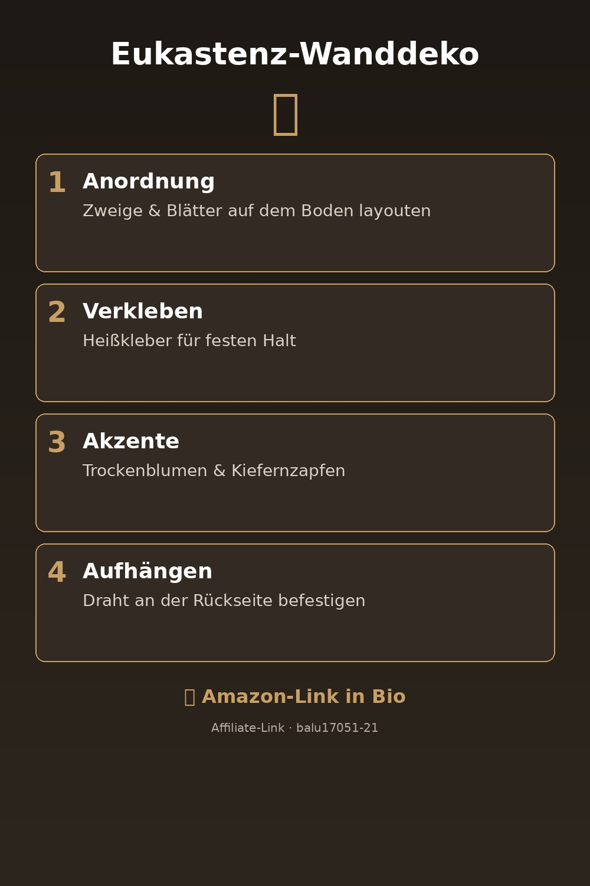
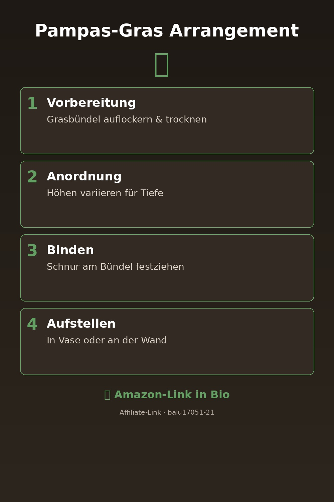
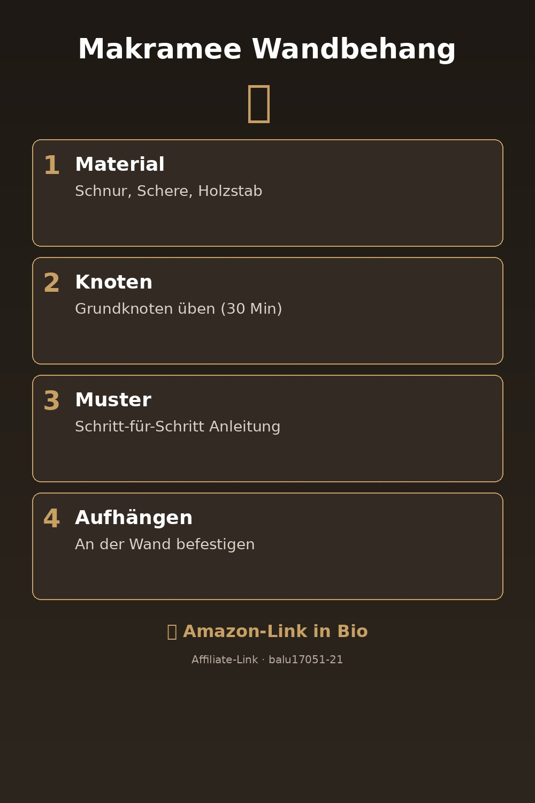

Orientiert am erfolgreichen Treibholz-Pin: Schritt-für-Schritt, dunkler Hintergrund, weißer Text, warme Farben, 2:3-Format. Alle Links mit deinem Affiliate-Tag balu17051-21.

Diese Wanddeko sieht aus wie für 50 € gekauft – kostet aber nur die Hälfte. Perfekt für Wohnzimmer & Flur.
Amazon-Link →
Der angesagteste Trend 2026: Pampas-Gras als Statement an der Wand. Einfach, günstig, wirkungsvoll.
Amazon-Link →
Mit nur Material von Amazon und 45 Min. Zeit dieser Wandbehang. Inkl. Video-Anleitung & Material-Liste.
Amazon-Link →🌿 Wanddeko aus dem Nichts: Eukastenz-Skulptur in 4 Schritten Diese Wanddeko sieht aus wie für 50 € gekauft – kostet aber nur die Hälfte. Perfekt für Wohnzimmer & Flur. #Wanddeko #Wohndeko #DIY #Eukastenz #BohoWohnen #Selbermachen #Wandkunst #DekoIdeen #FlurDeko #WohnzimmerInspiration 🔗 https://www.amazon.de/dp/B0D91JF8SZ?tag=balu17051-21
🌾 Boho-Wohnen: Pampas-Gras-Anordnung in 15 Minuten Der angesagteste Trend 2026: Pampas-Gras als Statement an der Wand. Einfach, günstig, wirkungsvoll. #PampasGras #BohoDeko #Wanddeko #Wohnen #DekoIdeen #BohoWohnen #PinterestDIY #InteriorDesign #HomeDecor #Selbermachen 🔗 https://www.amazon.de/dp/B0GWPX6VHF?tag=balu17051-21
🧵 DIY Makramee: Wandbehang in 6 Schritten selber machen Mit nur Material von Amazon und 45 Min. Zeit dieser Wandbehang. Inkl. Video-Anleitung & Material-Liste. #Makramee #DIY #Wandbehang #Selbermachen #BohoDeko #Handmade #PinterestDIY #Wandkunst #HomeDecor #Wohnen 🔗 https://www.amazon.de/dp/B0FYQX1MJ3?tag=balu17051-21
WICHTIG: Die obigen ASINs sind Beispiele – prüfe vor dem Posten, ob die Produkte verfügbar und preislich attraktiv sind. Suche auf Amazon nach "Eukastenz Deko", "Pampas Gras", "Makramee Set" und nimm die besten Ergebnisse.